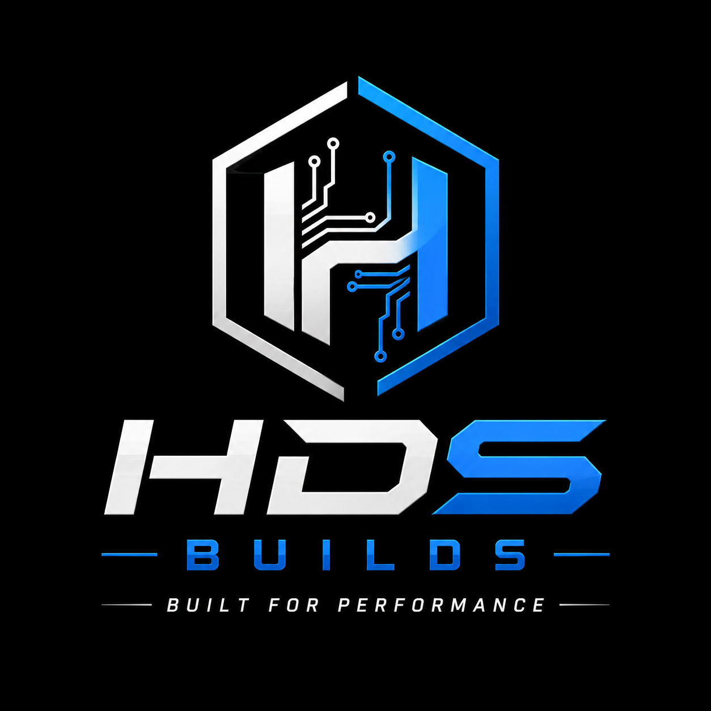

Custom Gaming PCs engineered for enthusiasts. From Study PCs to Hardcore Gaming Rigs. Built in India. Shipped across India.

HDS BUILDS is a build-to-order custom PC company based in India. Every computer is assembled according to the customer's exact specifications using genuine components. Instead of keeping expensive inventory, every build begins only after the order is confirmed, ensuring every customer receives a brand-new system built specifically for them. Whether you're a gamer, student, creator or professional, HDS BUILDS aims to deliver reliable performance, clean cable management and careful quality testing before every shipment.
Every PC is built using authentic, brand-new components from trusted brands.
Every build is assembled neatly for maximum airflow and a clean appearance.
Every PC undergoes stability and performance testing before shipping.
Secure packaging with shipping available across India.
Every computer is built specifically according to your requirements.
Need help choosing parts? Our team is ready to assist you.